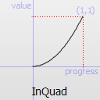
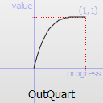
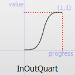
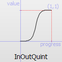
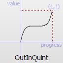
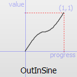
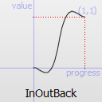
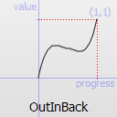

| Home · All Classes · Modules · QSS HELP · QSS 案例 · VER007 HOME |
该QEasingCurve类提供用于控制动画的缓和曲线。More...
该QEasingCurve类提供用于控制动画的缓和曲线。
缓和曲线描述的功能，其控制0和1之间的内插的速度应如何。缓和曲线允许从一个值到另一个过渡显得更自然不是一个简单的恒定速度将允许。该QEasingCurve类通常是在与结合使用QVariantAnimation和QPropertyAnimation类，但可以使用其本身。它通常被用来从零速度（缓和）加速插或减速到零速度（缓出） 。缓解和减轻了，也可以在同一个缓动曲线相结合。
来计算内插的速度，缓和曲线提供的功能valueForProgress（ ），其中该progress参数指定插值的进度： 0是插值的起始值， 1为插值的终值。返回的值是插值的有效进展。如果返回值是一样的输入值的所有输入值的缓动曲线是线性曲线。这是默认行为。
例如，
QEasingCurve easing(QEasingCurve.InOutQuad); for(qreal t = 0.0; t < 1.0; t+=0.1) qWarning() << "Effective progress" << t << " is << easing.valueForProgress(t);
将打印0和1之间的内插的有效进展。
当使用一个QPropertyAnimation时，相关的缓和曲线将被用于控制起始值和endValue值之间的内插的进展：
QPropertyAnimation animation; animation.setStartValue(0); animation.setEndValue(1000); animation.setDuration(1000); animation.setEasingCurve(QEasingCurve.InOutQuad);
设定的幅度，过冲，期间或能力取决于QEasingCurve类型。振幅接入服务提供给表现为弹簧等弹性及反弹曲线的曲线。变化的幅度变化的曲线的高度。访问期间只适用于弹性曲线和设置较高的周期减缓反弹的速度。只有具有“自食其果”的行为，如曲线InBack，OutBack，InOutBack和OutInBack有过冲的设置。这些曲线将插以外的终点，并返回到终点，作用类似于一个飞去来器。
该Easing Curves Example包含QEasingCurve类型的样品并允许您更改曲线设置。
缓和曲线的类型。
| Constant | Value | Description |
|---|---|---|
| QEasingCurve.Linear | 0 |
 缓和曲线的线性（ t）的功能：速度是恒定的。 |
| QEasingCurve.InQuad | 1 |
 缓和曲线二次（T ^ 2 ）功能：从零速度加速。 |
| QEasingCurve.OutQuad | 2 |
 缓和曲线二次（T ^ 2 ）功能：减速至零速度。 |
| QEasingCurve.InOutQuad | 3 |
 缓和曲线二次（T ^ 2 ）功能：加速至一半，然后再减速。 |
| QEasingCurve.OutInQuad | 4 |
 缓和曲线二次（T ^ 2 ）功能：减速至一半，然后再加速。 |
| QEasingCurve.InCubic | 5 |
 缓和曲线立方（T ^ 3 ）功能：从零速度加速。 |
| QEasingCurve.OutCubic | 6 |
 缓和曲线立方（T ^ 3 ）功能：减速至零速度。 |
| QEasingCurve.InOutCubic | 7 |
 缓和曲线立方（T ^ 3 ）功能：加速至一半，然后再减速。 |
| QEasingCurve.OutInCubic | 8 |
 缓和曲线立方（T ^ 3 ）功能：减速，直到一半，然后再加速。 |
| QEasingCurve.InQuart | 9 |
 缓和曲线四次（T ^ 4 ）功能：从零速度加速。 |
| QEasingCurve.OutQuart | 10 |
 缓和曲线四次（T ^ 4 ）功能：减速至零速度。 |
| QEasingCurve.InOutQuart | 11 |
 缓和曲线四次（T ^ 4 ）功能：加速至一半，然后再减速。 |
| QEasingCurve.OutInQuart | 12 |
 缓和曲线四次（T ^ 4 ）功能：减速，直到一半，然后再加速。 |
| QEasingCurve.InQuint | 13 |
 缓和曲线五次（T ^ 5 ）宽松：从零速度加速。 |
| QEasingCurve.OutQuint | 14 |
 缓和曲线五次（T ^ 5 ）功能：减速至零速度。 |
| QEasingCurve.InOutQuint | 15 |
 缓和曲线五次（T ^ 5 ）功能：加速至一半，然后再减速。 |
| QEasingCurve.OutInQuint | 16 |
 缓和曲线五次（T ^ 5 ）功能：减速，直到一半，然后再加速。 |
| QEasingCurve.InSine | 17 |
 缓动曲线为正弦（罪（ t））的功能：从零速度加速。 |
| QEasingCurve.OutSine | 18 |
 缓动曲线为正弦（罪（ t））的功能：从零速度减速。 |
| QEasingCurve.InOutSine | 19 |
 缓动曲线为正弦（罪（ t））的功能：加速至一半，然后再减速。 |
| QEasingCurve.OutInSine | 20 |
 缓动曲线为正弦（罪（ t））的功能：减速，直到一半，然后再加速。 |
| QEasingCurve.InExpo | 21 |
 缓和曲线的指数（ 2 ^ t）的功能：从零速度加速。 |
| QEasingCurve.OutExpo | 22 |
 缓和曲线的指数（ 2 ^ t）的功能：从零速度减速。 |
| QEasingCurve.InOutExpo | 23 |
 缓和曲线的指数（ 2 ^ t）的功能：加速至一半，然后再减速。 |
| QEasingCurve.OutInExpo | 24 |
 缓和曲线的指数（ 2 ^ t）的功能：减速，直到一半，然后再加速。 |
| QEasingCurve.InCirc | 25 |
 缓和曲线的圆（ SQRT （ 1 -T ^ 2 ） ）功能：从零速度加速。 |
| QEasingCurve.OutCirc | 26 |
 缓和曲线的圆（ SQRT （ 1 -T ^ 2 ） ）功能：从零速度减速。 |
| QEasingCurve.InOutCirc | 27 |
 缓和曲线的圆（ SQRT （ 1 -T ^ 2 ） ）功能：加速至一半，然后再减速。 |
| QEasingCurve.OutInCirc | 28 |
 缓和曲线的圆（ SQRT （ 1 -T ^ 2 ） ）功能：减速至一半，然后再加速。 |
| QEasingCurve.InElastic | 29 |
 缓和曲线的弹性（指数衰减正弦波）功能：从零速度加速。峰值幅度可与设置amplitude参数和衰减的通过期间period参数。 |
| QEasingCurve.OutElastic | 30 |
 缓和曲线的弹性（指数衰减正弦波）功能：从零速度减速。峰值幅度可与设置amplitude参数和衰减的通过期间period参数。 |
| QEasingCurve.InOutElastic | 31 |
 缓和曲线的弹性（指数衰减正弦波）功能：加速至一半，然后再减速。 |
| QEasingCurve.OutInElastic | 32 |
 缓和曲线的弹性（指数衰减正弦波）功能：减速至一半，然后再加速。 |
| QEasingCurve.InBack | 33 |
 缓和曲线的背（过冲三次函数： （ S +1 ） * T ^ 3 - S * T ^ 2 ）缓和：从零速度加速。 |
| QEasingCurve.OutBack | 34 |
 缓和曲线的背（过冲三次函数： （ S +1 ） * T ^ 3 - S * T ^ 2 ）缓出：减速至零速度。 |
| QEasingCurve.InOutBack | 35 |
 缓和曲线的背（过冲三次函数： （ S +1 ） * T ^ 3 - S * T ^ 2 ）缓解输入/输出：加速，直到一半，然后再减速。 |
| QEasingCurve.OutInBack | 36 |
 缓和曲线的背部（立方过度宽松： （ S +1 ） * T ^ 3 - S * T ^ 2 ）缓和输出/输入：减速至一半，然后再加速。 |
| QEasingCurve.InBounce | 37 |
 缓和曲线反弹（指数衰减的抛物线反弹）功能：从零速度加速。 |
| QEasingCurve.OutBounce | 38 |
 缓和曲线反弹（指数衰减的抛物线反弹）功能：从零速度减速。 |
| QEasingCurve.InOutBounce | 39 |
 缓和曲线反弹（指数衰减的抛物线反弹）功能缓解输入/输出：加速至一半，然后再减速。 |
| QEasingCurve.OutInBounce | 40 |
 缓和曲线反弹（指数衰减的抛物线反弹）函数退出宽松政策/中：减速，直到一半，然后再加速。 |
| QEasingCurve.Custom | 45 | 如果用户指定了一个自定义的曲线类型，这是返回setCustomType（ ） 。请注意，您不能打电话setType（ ）与该值，但type（ ）可以返回它。 |
构造给定的缓动曲线type。
构建副本other。
返回的幅度。这并不适用于所有类型的曲线。它仅适用于弹跳和弹性曲线曲线（type（ ）QEasingCurve.InBounce，QEasingCurve.OutBounce，QEasingCurve.InOutBounce，QEasingCurve.OutInBounce，QEasingCurve.InElastic，QEasingCurve.OutElastic，QEasingCurve.InOutElastic or QEasingCurve.OutInElastic） 。
See also setAmplitude（ ） 。
返回的函数指针的定义缓动曲线。如果type（ ）不返回QEasingCurve.Custom，这个函数将返回0 。
See also setCustomType（ ） 。
返回过冲。这并不适用于所有类型的曲线。它仅适用type（）是QEasingCurve.InBack，QEasingCurve.OutBack，QEasingCurve.InOutBack or QEasingCurve.OutInBack。
See also setOvershoot（ ） 。
返回的时间。这并不适用于所有类型的曲线。它仅适用type（）是QEasingCurve.InElastic，QEasingCurve.OutElastic，QEasingCurve.InOutElastic or QEasingCurve.OutInElastic。
See also setPeriod（ ） 。
设定的幅度以amplitude。
这将设置反弹或弹性“弹簧”效应振幅的振幅。该数字越高，则振幅为高。
See also amplitude（ ） 。
设置由用户在函数定义的自定义缓动曲线func。该函数的签名是QREAL myEasingFunction （ QREAL进步），其中progress和返回值被认为是0和1之间被归一化。 （在某些情况下的返回值可以是在那个范围外）调用此函数之后type（ ）将返回QEasingCurve.Custom。func不能为零。
See also customType（）和valueForProgress（ ） 。
设置超调量overshoot。
0不产生过冲，以及1.70158默认值会产生10％的过冲。
See also overshoot（ ） 。
设置期间period。设置一个小的时间值将赋予曲线的高频。一个大周期将会给它一个小的频率。
See also period（ ） 。
设置缓和曲线的类型type。
See also type（ ） 。
返回缓和曲线的类型。
See also setType（ ） 。
在返回的缓动曲线的有效进展progress。而progress必须在0和1之间，返回的有效进展可以是那些界限之外。例如，QEasingCurve.InBack将在函数开头返回负值。
| PyQt 4.10.3 for X11 | Copyright © Riverbank Computing Ltd and Nokia 2012 | Qt 4.8.5 |